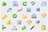

GrabBox Homepage

Click here to download the newest version of GrabBox now!
About
GrabBox is a simple tool for the Mac similar to TinyGrab. It monitors all screenshots taken, and copies them to your Dropbox Public folder, and then copies the link to it to the clipboard - ready to share with friends & strangers!
In addition, it has these features to distinguish itself from TinyGrab:
- No ads (since it uses Dropbox for hosting).
- Short URLs via this domain - you can turn this off.
- Can specify that the user has to initiate uploads, if you don't want to upload all screenshots indiscriminately.
- Can specify uploaded file's name (if wanted, otherwise uses a short, autogenerated name).
- Resides in Dock, so it doesn't clutter up your tray area.
These features are coming to GrabBox soon:
- Alternate upload URL / local directory.
Screenshots
Powered by
 Growl, for user notifications.
Growl, for user notifications.- Sparkle, for fast, safe & simple automatic updates.
-  Silk, for a couple of icons. These are by Mark James, released under Creative Commons Attribution 2.5 License.
- Erik Müller, for a snazzy application icon.